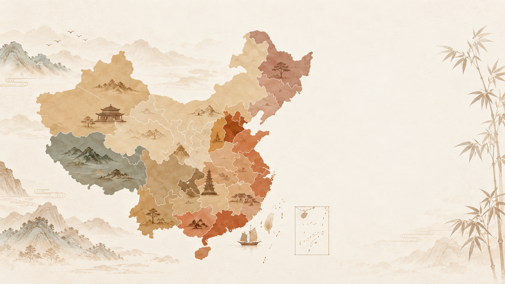
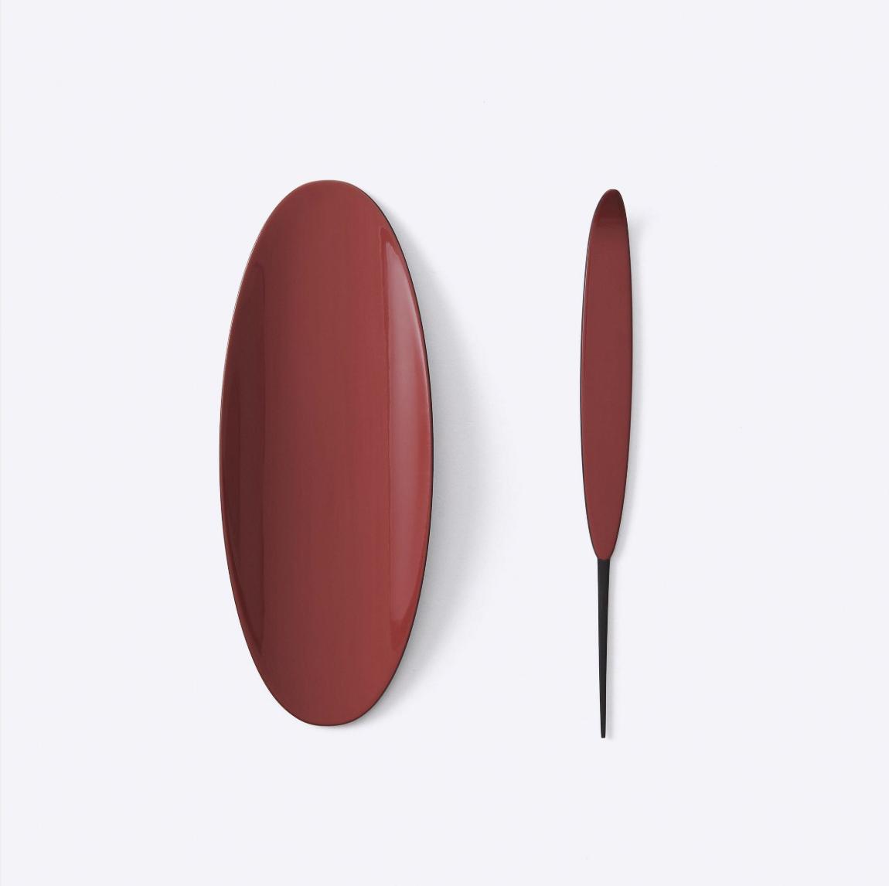
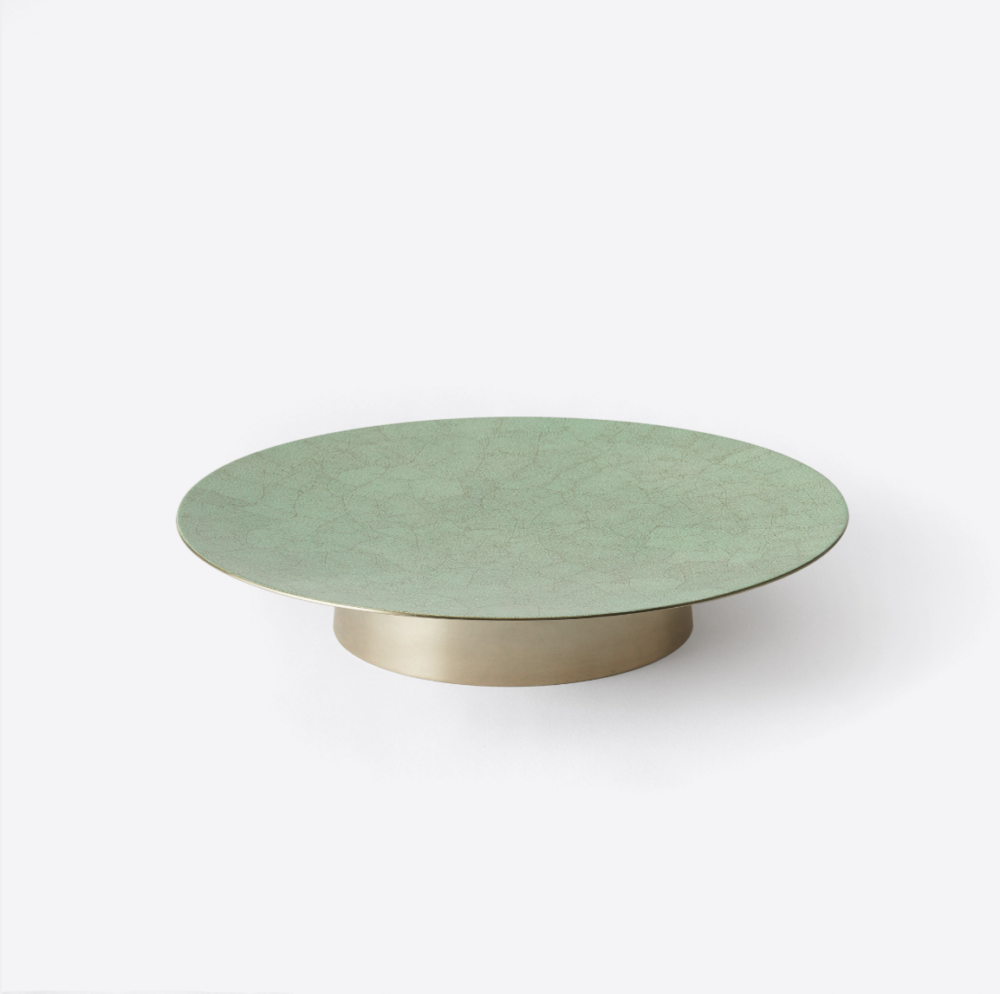

A living culture, waiting to be discovered
Discover the Traditions Behind China's Culture
Explore the stories, skills, and traditions that make China's intangible cultural heritage unique, and discover the people keeping them alive.
Explore Heritage →Featured traditions
Stories Worth Preserving
Meet some of the traditions passed down through generations.
Explore by region
Explore China's Cultural Heritage
Every region holds traditions shaped by its history, landscape, and community. Choose a region to begin your journey.

EXPLORE BY REGION
Discover Traditions Across China
Click on a region to explore local crafts, performances, and customs, and learn the stories behind them.
Pieces made with this craft
Porcelain from SHANG XIA's tea collections.

Lacquer Tea Accoutrement
View piece →
Eggshell Lacquer Round Tray
View piece →About SHANG XIA
SHANG XIA celebrates the beauty of Chinese craftsmanship, bringing traditional heritage into contemporary life.
Discover Our Craftsmanship